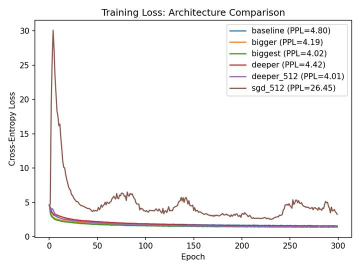

A systematic sweep of hidden size, depth, optimizer, and sampling temperature for character-level language modeling, built on top of an existing char-RNN implementation rather than written from scratch, to isolate what each architectural choice actually costs or buys.
This started as a COGS 185 final project, not a from-scratch model: I took an existing PyTorch char-RNN implementation (spro/char-rnn.pytorch, itself a PyTorch port of Karpathy's original char-rnn) as the base and used it to answer a specific empirical question: how do hidden size, network depth, optimizer choice, and sampling temperature actually trade off against each other for character-level language modeling, and does what the model learns transfer across genres?
The base repo provided the GRU/LSTM model definition and training loop; my contribution
was the experimental design layered on top of it. Seven configurations were trained for
300 epochs each on Tiny Shakespeare: a baseline (1 layer, hidden 128), then
bigger (hidden 256) and biggest (hidden 512) to isolate width,
deeper (2 layers, hidden 128) to isolate depth, deeper_512
combining both, and sgd_512, an identical architecture to
deeper_512 but trained with SGD instead of Adam, to isolate the optimizer.
A seventh run, sherlock_512, retrained the best architecture on Sherlock
Holmes (Project Gutenberg) to test cross-domain transfer.
Every configuration besides the one variable under test kept hyperparameters fixed
(learning rate 0.005, batch size 100, chunk length 200), so each comparison isolates a
single change rather than conflating several at once. I wrote compare_experiments.py
to load every experiment's saved loss_history.json and generate a single
overlay loss curve plus a perplexity summary table, so results are reproducible from the
saved artifacts rather than re-read off individual training logs.
Increasing hidden size alone improved perplexity with clearly diminishing returns (4.80 →
4.19 → 4.02 going from 128 to 256 to 512 units). Combining depth and width produced the
best model overall, deeper_512 at PPL 4.01, only marginally ahead of
biggest's 4.02, suggesting width was doing most of the work. The starkest
result was the optimizer swap: the identical deeper_512 architecture trained
with SGD instead of Adam collapsed to PPL 26.45, an order of magnitude worse, with a loss
curve that spikes early and never fully recovers. Retrained on Sherlock Holmes, the same
architecture reached PPL 3.60 and produced prose-structured output instead of verse,
without any explicit supervision telling it the genre had changed.
Reproduced directly from compare_experiments.py's output, overlaying all six
Shakespeare training runs on one plot. The SGD run (brown) is the same architecture as the
best Adam run (purple), differing only in optimizer.

Extending someone else's implementation isn't a shortcut around the harder skill, it's a way to spend the effort on experiment design instead of re-deriving a training loop. The real work here was holding every variable fixed except one and being honest that the SGD run isn't "a worse model," it's the same model under a hyperparameter choice that fails outright, the same discipline behind the controlled sweep in the ML Classifier Benchmark Study.